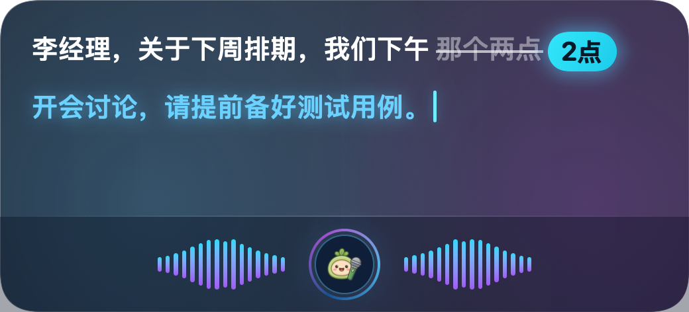

不必停下来打字。在任意应用中按住快捷键说话，松手瞬间，端侧声学模型与本地大语言模型协同工作，自动过滤口癖、修整语法、润色标点，文字直接飞入当前光标处。

所有声学转写与大语言模型润色均在 Mac 本地统一内存中完成，无需联网，从物理底层杜绝隐私泄露。
麦克风音频流仅在 Apple Silicon 统一内存中处理，绝不上传到任何远程服务器。拔掉网线、开启飞行模式，依旧流畅打字。
音频处理完毕后即刻从内存中释放，从不在本地磁盘写入录音文件或音频缓存，从物理底层杜绝任何泄露可能。
无需注册账号，无需配置 OpenAI、DeepSeek 等第三方 API Key，没有按字扣费的后顾之忧，下载即可免费使用。
遇到密码输入框时自动拦截，杜绝敏感密码误听写；支持 Transient 瞬态剪贴板标记，不被任何历史剪贴板工具偷录。
日常说话不可避免地会有口癖、倒装、语气词和犹豫。Voice Buddy 让声学转录与大语言模型接力，将口语一键整理为得体书面文稿。
“呃李经理那个关于下周排期计划我们下午两点开个短会过一下然后测试同学记得把用例准备好就这样”
“李经理，关于下周排期计划，我们下午两点开个短会过一下，测试同学记得把用例准备好。”
设置中的 4 档整理力度：你可以在客户端「通用设置 → 文字整理力度」中按需选择：原文 (无整理)、轻度整理 (Level 1)、深度优化 (Level 2) 或 专业重构 (Level 3)。在结果面板中，更可随时一键对比两版并重新插入！
全局光标即时注入，彻底告别繁琐的窗口切换。
微信、飞书、Slack、Notion、VS Code 或 Terminal 终端，光标在何处，文字就写在何处。
单手轻按 Fn / 地球键或 ^⌥Space 即可自由倾诉。支持「长按说话」或「按键启停」两种触发方式。
松开按键瞬间，声学识别与 AI 整理完成，文字直接打入光标处，背景音乐自动智能恢复（按 Esc 可快捷撤销）。
针对不同 Mac 配置与语种偏好，内置 5 大主流端侧声学模型。
CoreML · 980 MB
全球 90+ 语言高精听写，跨国多语互译与纯英文首选。
CoreML · 230 MB
毫秒级极速响应，中英粤日韩五语首选，超低显存开销。
MLX 8-bit · 960 MB · 约 1.0 GB 统一内存
极速轻量 · 推荐日常快速听写与中英混说，显存占用极低，平衡首选。
MLX 8-bit · 1.7 GB · 约 1.8 GB 统一内存
高精旗舰 · 适合长句、专业学术与深度编程代码术语，多语种更严谨细腻。
系统原生 · 0 MB
macOS 系统内置听写服务，0 磁盘占用，免下载即刻可用。
本地语言模型：搭配内置的端侧 Qwen 大模型 (0.5B / 1.5B / 3.5 0.8B)，无论使用哪款声学引擎，都能畅享无缝的本地大模型智能润色与书面重构。

把小米蓝牙语音遥控器、Chromecast 遥控器变成 Mac 的无线虚拟麦克风与快捷键控制器，靠在椅背上单手按键即可唤醒 Voice Buddy 轻松语音打字。

100% 纯本地运行 · 极致隐私安全 · 零云端费用 · 立即下载开始体验。